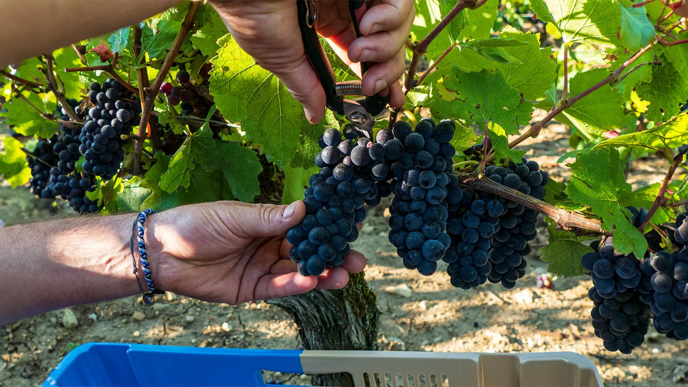
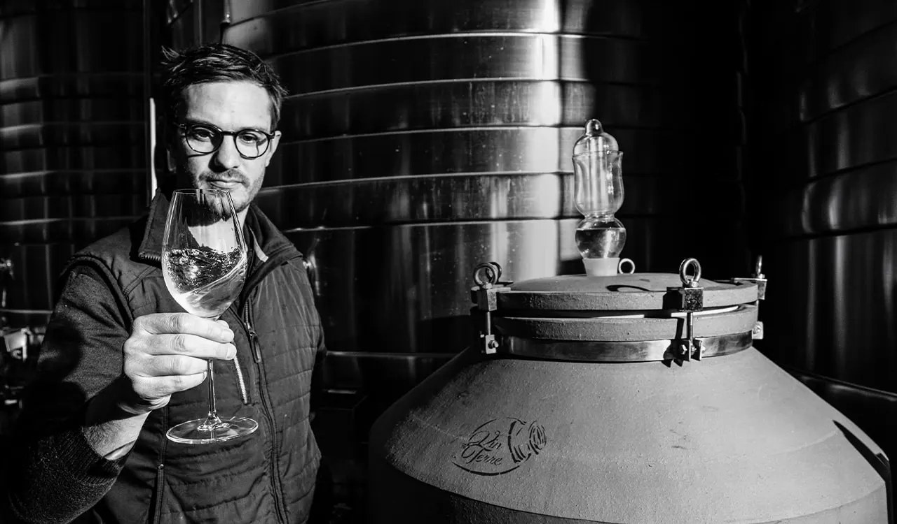
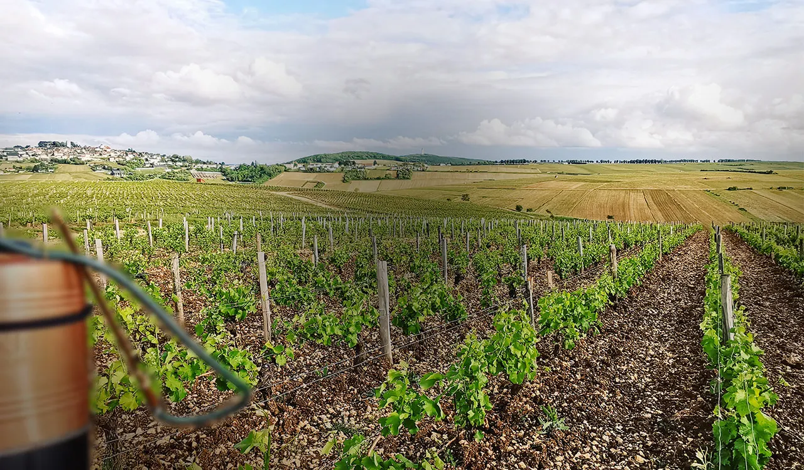
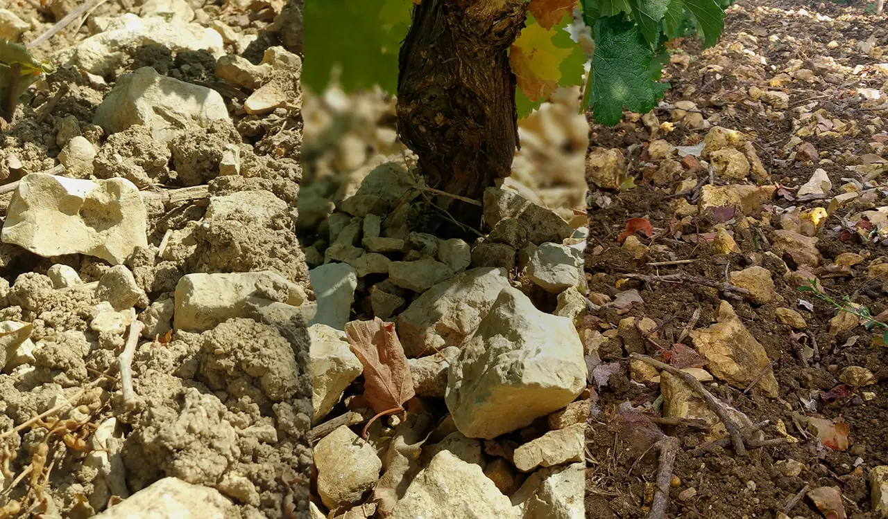
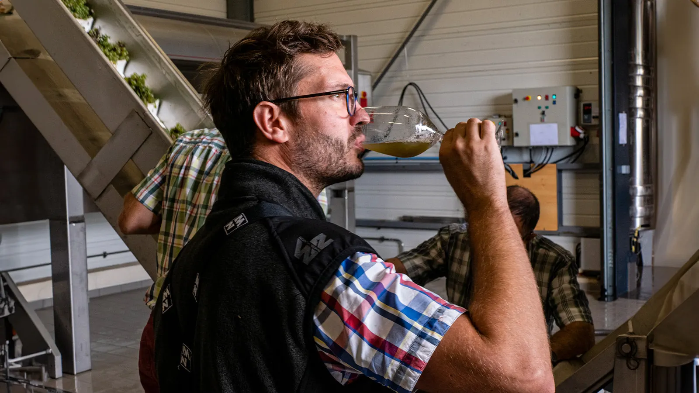
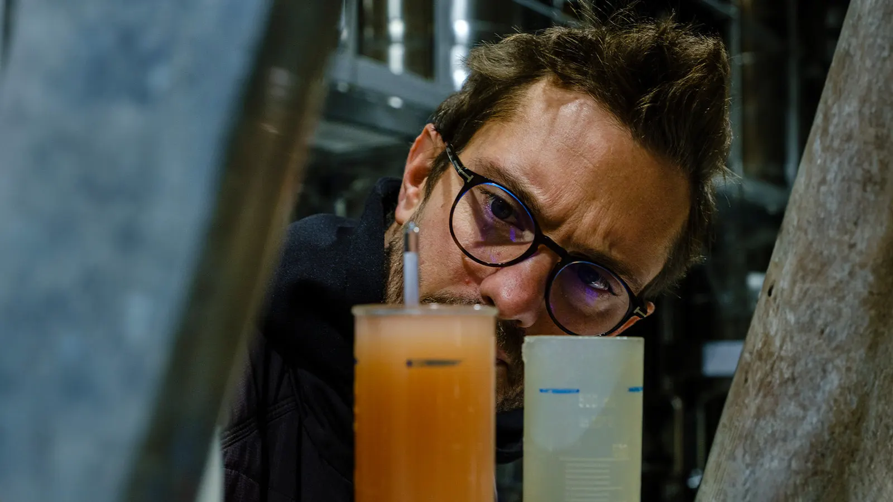
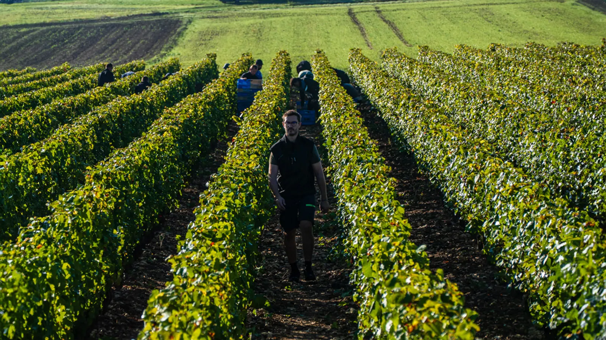
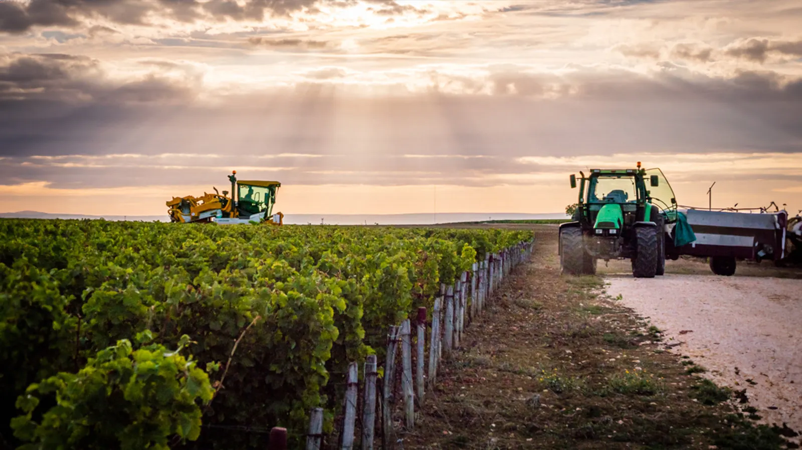
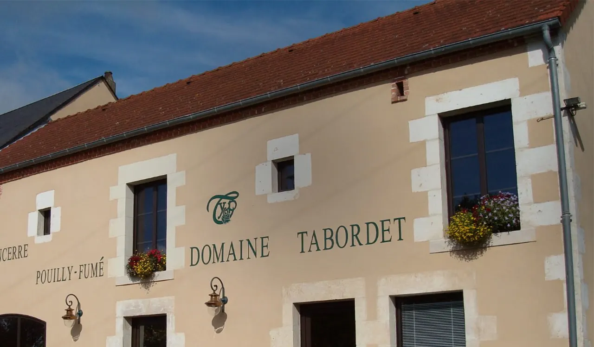
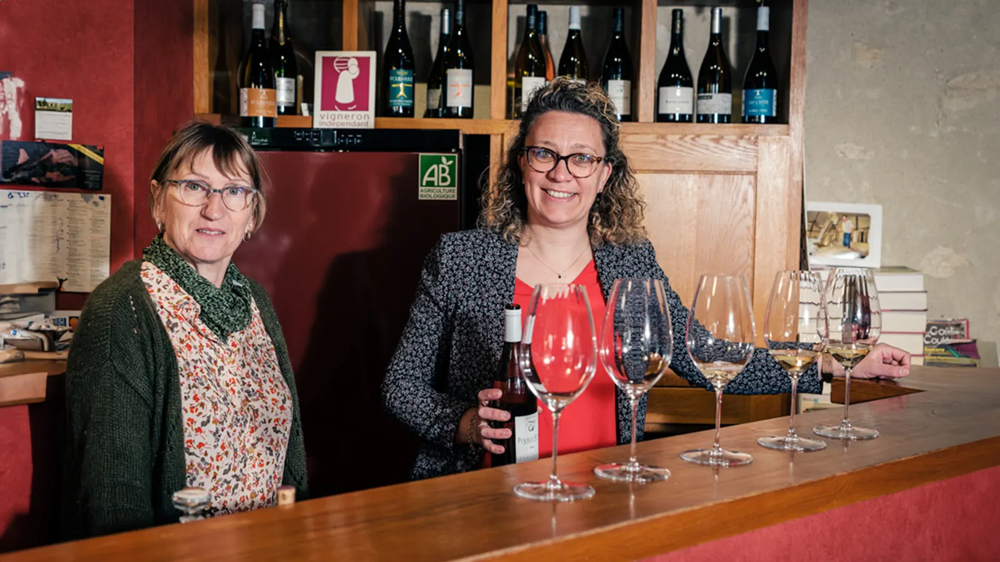

Un domaine, une aventure sensible.
12 cuvées sont élaborées, 4 cuvées Domaine et 8 parcellaires, en Sancerre et en Pouilly-Fumé. Les vinifications se réalisent naturellement en levures indigènes et avec un minimum d’intrants.


- 12 cuvées4 Domaine et 8 parcellaires
- 5 haen appellation Sancerre
- 16 haen appellation Pouilly-Fumé
- 7 à 36 moisd’élevage, en inox, bois et grès
- Biolabellisé sur le millésime 2021, conduite en biodynamie
Sous les pieds de vigne, vibre un fabuleux trésor.
Sur les rives de la Loire se sont formés, il y a bien longtemps, les terroirs de Sancerre et de Pouilly-Fumé.
Le domaine se répartit sur deux appellations, Sancerre (5 ha) et Pouilly-Fumé (16 ha), et deux cépages : Sauvignon Blanc et Pinot Noir. Nous travaillons en Agriculture Biologique et en conduite biodynamique, afin d’aider la vigne à révéler ses terroirs et son meilleur potentiel.
Les terroirs apportent à nos vins toutes leurs saveurs et leurs caractéristiques.


Une famille ancrée dans son terroir.
Leur philosophie : s’approprier les différents terroirs et en extraire le meilleur, le plus naturellement et simplement possible.


- Années 60
Raymond Tabordet crée le domaine
À Verdigny, par l’acquisition de 4,5 ha de vignes sur l’appellation Sancerre.
- Années 80
Yvon et Pascal le rejoignent
Ses fils agrandissent le domaine sur l’appellation Pouilly-Fumé. Aujourd’hui, Yvon est en retraite ; Pascal s’occupe des commandes, des expéditions et des salons, et Marie-Laure, son épouse, de la partie administrative et commerciale.
- 2012
Marius et Gaël s’installent
Ils agrandissent le domaine, également sur Pouilly. Marius a mené la conversion en Agriculture Biologique, la conduite de la vigne, les vinifications ; Gaël s’occupe de la partie technique, de la vendange et de la taille. Floriane seconde Marie-Laure.
- 2021
Nouvelle génération, nouvelle vision
Traitements à base de tisanes de plantes, labellisation en Agriculture Biologique sur le millésime 2021 et, en parallèle, conduite du domaine en biodynamie.
La réussite d’un vin est le résultat de la bonne santé de son terroir et de son végétal.
Accompagner le vivant
Des composts de qualité, un travail des sols limité, une taille non mutilante et réfléchie, des traitements à base de plantes, et une récolte du raisin à son meilleur potentiel.
Restituer l’âme des terroirs
Une récolte manuelle ou mécanique suivant les cuvées, une fermentation en levure indigène propre à son terroir. Chaque cuvée est vinifiée dans son contenant : inox, bois ou grès.


Les vins
C’est l’aboutissement de longs mois de travail. De la rigueur, de l’accompagnement, du suivi. Surtout du plaisir à faire le métier de vigneron. Nous pensons que tous ces points font que nos vins expriment au mieux leurs terroirs.
Pouilly-Fumé vins blancs
- Pouilly-Fumé Domaine
- Les Petites Aubues
- Les Champs des Chaumes
- L’Autre Rive
- Les Calcis
- Amphore
Sancerre vins blancs
- Sancerre Domaine
- La Belle Oreille
- Aventure
Sancerre rouges et rosé
- Sancerre Domaine, rouge
- Cuvée Raymond, rouge
- Sancerre rosé
Suivant les cuvées, les vins sont filtrés et ajustés en soufre. Les élevages durent en moyenne de 7 à 36 mois, pour notre blanc Aventure.


Déguster au caveau, ou sur les salons.
Nous serons heureux de vous recevoir pour déguster nos vins sur les différents salons, et également au caveau.
Les salons et la vie du domaine se suivent sur Instagram, @mariustabordet.